بسم الله الرحمن الرحيم
Sayyid Abul Ala Maududi - Tafhim al-Qur'an - The Meaning of the Qur'an
 48.
Surah Al Fath (The Victory)
48.
Surah Al Fath (The Victory)
It is derived from the words Inna fatah-na laka fat-han mubina of the very first verse. This is not only a name of the Surah but also its title in view of the subject matter, for it deals with the great victory that Allah granted to the Holy Prophet and the Muslims in the form of the Truce of Hudaibiyah.
Traditions concur that it was sent down in Dhil-Qadah, A. H. 6, at a time when the Holy Prophet was on his return journey to Madinah after concluding the Truce of Hudaibiyah with the disbelievers of Makkah.
The events in connection with which this Surah was sent down began life this: One day the Holy Prophet saw in a dream that he had gone to Makkah with his Companions and had performed the umrah there. Obviously, the Prophet's dream could not be a mere dream and fiction for it is a kind of Divine inspiration as Allah Himself has confirmed in verse 27 below and said that He Himself had shown that dream to His Messenger. Therefore, it was not merely a dream but a Divine inspiration which the Holy Prophet had to obey and follow.
Apparently, there was no possible way of acting on this inspiration. The disbelieving Quraish had debarred the Muslims from proceeding to the Ka'bah for the past six years and no Muslim had been allowed during that period to approach the Kabah for the purpose of performing hajj and umrah. Therefore, it could not be expected that they would allow the Holy Prophet to enter Makkah along with a party of his Companions. If they had proceeded to Makkah in the pilgrim garments with the intention of performing umrah, along with their arms, this would have provoked the enemy to war, and if they had proceeded unarmed, this would have meant endangering his own as well as his Companions' lives. Under conditions such as these nobody could see and suggest how the Divine inspiration could be acted upon.
But the Prophet's position was different. It demanded that he should carry out whatever Command his Lord gave fearlessly and without any apprehension and doubt. Therefore, the Holy Prophet informed his Companions of his dream and began to make preparations for the journey. Among the tribes living in the suburbs also he had the public announcement made that he was proceeding for umrah and the people could join him. Those who could only see the apparent conditions thought that he and his Companions were going into the very jaws of death none of them therefore was inclined to accompany him in the expedition. But those who had true faith in Allah and His Messenger were least bothered about the consequences. For them this information was enough that it was a Divine inspiration and Allah's Prophet had made up his mind to carry it into effect. After this nothing could hinder them from accompanying the Messenger of Allah. Thus, 1,400 of the Companions became ready to follow him on this highly dangerous journey.
This blessed caravan set off from Madinah in the beginning of Dhil Qa'dah, A. H. 6. At Dhul Hulaifah they entered the pilgrims robe with the intention of umrah, took 70 camels with collars round their necks indicating that they were sacrificial animals; kept only a sword each in sheaths, which the pilgrims to the Kabah were allowed to carry according to the recognized custom of Arabia, but no other weapon. Thus, the caravan set out for the Ka'bah, the House of Allah, at Makkah, chanting the prescribed slogan of Labbaik, Allahuma Labbaik.
The nature of the relations between Makkah and Madinah in those days was known too well to every Arab. Just the previous year, in Shawwal A. H. 5, the Quraish mustering the united strength of the Arab tribes had invaded Madinah and the well known Battle of the Trench had taken place. Therefore, when the Holy Prophet along with such a large caravan set off for the home of his blood-thirsty enemy, the whole of Arabia looked up with amazement, and the people also noticed that the caravan was not going with the intention to fight but was proceeding to the House of Allah in a forbidden month in the pilgrims garb carrying sacrificial animals and was absolutely unarmed.
The Quraish were confounded at this bold step taken by the Holy Prophet. Dhil-Qa'dah was one of those forbidden months which had been held as sacred for pilgrimage in Arabia for centuries. Nobody had a right to interfere with a caravan which might be coming for hajj or umrah in the pilgrims garb in this month; so much so that even an enemy tribe could not hinder it from passing through its territory according to the recognized law of the land. The Quraish therefore were caught in a dilemma, for if they attacked this caravan from Madinah and stopped it from entering Makkah, this would arouse a clamor of protest in the whole country, and all the Arab tribes would have the misgiving that the Quraish had monopolized the Ka'bah as exclusively their own, and every tribe would be involved in the mistrust that now it depended on the will of the Quraish to allow or not to allow anyone to perform hajj or umrah in the future and that they would stop any tribe with which they were angry from visiting the Ka'bah just as they had stopped the Madinese pilgrims. This they thought would be a grave mistake, which would cause the entire Arabia to revolt against them. But, on the other hand, if they allowed Muhammad (upon whom be Allah's peace and blessings) and his large caravan to enter their city safely, they would lose their image of power in Arabia and the people would say that they were afraid of Muhammad. At last, after a great deal of confusion, perplexity and hesitation they were overcome by their false sense of honor and for the sake of their prestige they took the decision that they would at no cost allow the caravan to enter the city of Makkah.
The Holy Prophet had dispatched a man of the Bani Ka'b as a secret agent so that he may keep him fully informed of the intentions and movements of the Quraish. When the Holy Prophet reached Usfan, he brought the news that the Quraish had reached Dhi Tuwa with full preparations and they had sent Khalid bin Walid with two hundred cavalry men in advance towards Kura'al-Ghamim to intercept him. The Quraish wanted somehow to provoke the Holy Prophet's Companions into fighting so that they may tell the Arabs that those people had actually come to fight and had put on the pilgrims garments for umrah only to deceive others.
Immediately on receipt of this information the Holy Prophet changed his route and following a very rugged, rocky track reached Hudaibiyah, which was situated right on the boundary of the sacred Makkan territory. Here, he was visited by Budail bin Warqa the chief of the Bani Khuza'ah, along with some men of his tribe. They asked what he had come for. The Holy Prophet replied that he and his Companions bad come only for pilgrimage to the House of Allah and for going round it in worship and not for war. The men of Khuza'ah went and told this to the Quraish chiefs and counseled them not to interfere with the pilgrims. But the Quraish were obstinate. They sent Hulays bin Alqamah, the chief of the Ahabish, to the Holy Prophet to persuade him to go back. Their object was that when Muhammad (upon whom be Allah's peace) would not listen to Hulays, he would come back disappointed and then the entire power of the Ahabish would be on their side. But when Hulays went and saw that the whole caravan had put on the pilgrims garments, had brought sacrificial camels with festive collars round their necks, and had come for doing reverence to the House of Allah and not to fight, he returned to Makkah without having any dialogue with the Holy Prophet and told the Quraish chiefs plainly that those people bad no other object but to pay a visit to the Ka'bah; if they debarred them from it, the Ahabish would not join them in that, because they had not become their allies to support them if they violated the sacred customs and traditions.
Then the Quraish sent `Urwah bin Mas'ud Thaqafi; he had lengthy negotiations with the Holy Prophet in an effort to persuade him to give up his intention to enter Makkah. But the Holy Prophet gave him also the same reply that he had given to the chief of the Khuza'ah, that they had not come to fight but to do honor to the House of Allah and carry out a religious duty. Urwah went back and said to the Quraish: "I have been to the courts of the Caesar and Khosroes, and the Negus also, but by God, never have I seen any people so devoted to a king as are the Companions of Muhammad (upon whom be Allah's peace and blessings) to him. If Muhammad makes his ablutions they would not let the water thereof fall on the ground but would rub it on their bodies and clothes. Now you may decide as to what you should do."
In the meantime when the messages were coming and the negotiations were going on, the Quraish tried again and again to quietly launch sudden attacks on the Muslim camp in order to provoke the Companions and somehow incite them to war, but every time they did so the Companions' forbearance and patience and the Holy Prophet's wisdom and sagacity frustrated their designs. On one occasion forty or fifty of their men came at night and attacked the Muslim camp with stones and arrows. The Companions arrested all of them and took them before the Holy Prophet, but he let them go. On another occasion 80 men came from the direction of Tan'im right at the time of the Fajr Prayer and made a sudden attack. They were also caught, but the Holy Prophet forgave them, too. Thus, the Quraish went on meeting failure after failure in every one of their designs.
At last, the Holy Prophet sent Hadrat Uthman (may Allah be pleased with him) as his own messenger to Makkah with the message that they had not come to fight but only for pilgrimage and had brought their sacrificial camels along, and they would go back after performing the rite of pilgrimage and offering the sacrifice. But the Quraish did not agree and withheld Hadrat Uthman in the city. In the meantime a rumor spread that Hadrat Uthman had been killed; and when he did not return in time the Muslims took the rumor to be true. Now they could show no more forbearance. Entry into Makkah was different for there was no intention to use force. But when the ambassador was put to death, the Muslims had no alternative but to prepare for war. Therefore, the Holy Prophet summoned all his Companions together and took a solemn pledge from them that they would fight to death. In view of the critical occasion it was not an ordinary undertaking. The Muslims numbered only 1400 and had come without any weapons, were encamping at the boundary of Makkah, 250 miles away from their own city, and the enemy could attack them in full strength, and could surround them with its allies from the adjoining tribes as well. In spite of this, none from the caravan except one man failed to give his pledge to fight to death, and there could be no greater proof of their dedication and sincerity than that in the cause of Allah. This pledge is well known in the history of Islam as the pledge of Ridwan.
Later it was known that the news about Hadrat Uthman was false. Not only did he return but under Suhail bin 'Amr from the Quraish also arrived a deputation to negotiate peace with the Holy Prophet. Now, the Quraish no more insisted that they would disallow the Holy Prophet and his Companions to enter Makkah. However, in order to save their face they only insisted that he went back that year but could come the following year to perform the umrah. After lengthy negotiations peace was concluded on the following terms:
War would remain suspended for ten years, and no party would indulge in any hostility, open or secret, against the other.
If any one during that period from among the Quraish went over to Muhammad, without his guardian's permission, he would return him to them, but if a Companion of Muhammad came over to the Quraish, they would not return him to him.
Every Arab tribe would have the option to join either side as its ally and enter the treaty.
Muhammad and his men would go back that year and could come the following year for umrah and stay in Makkah for three days, provided that they brought only one sheathed sword each, and no other weapon of war. In those three days the Makkans would vacate the city for them (so that there was no chance of a clash), but they would not be allowed to take along any Makkan on return.
When the conditions of the treaty were being settled, the whole of the Muslim army was feeling greatly upset. No one understood the expedience because of which the Holy Prophet was accepting the conditions. No one was far sighted enough to foresee the great benefit that was to result from this treaty. The disbelieving Quraish looked at it as their victory, and the Muslims were upset as to why they should be humiliated to accepting those mean conditions. Even a statesman of th caliber of Hadrat Umar says that he had never given way to doubt since the time he had embraced Islam but on this occasion he also could not avoid it. Impatient he went to Hadrat Abu Bakr and said "Is he (the Holy Prophet) not Allah's Messenger, and are we not Muslims, and are they not polytheists? Then, why should we agree to what is humiliating to our Faith?" He replied "O Umar, he is surely Allah's Messenger, and Allah will never make him the loser." Unsatisfied he went to the Holy Prophet himself and put the same questions to him, and he also gave him the same replies as Hadrat Abu Bakr had given. Afterwards Hadrat Umar continued to offer voluntary prayers and give aims so that Allah may pardon his insolence that he had shown towards the Holy Prophet on that occasion.
Two things in the treaty were highly disturbing for the Muslims first, the second condition, about which they said that it was an expressly unfair condition, for if they had to return a fugitive from Makkah, why should not the Quraish return a fugitive from Madinah? To this the Holy Prophet replied: "What use would be he to us, who fled from us to them? May Allah keep him away from us!And if we return the one who flees to us from them, Allah will create some other way out for him." The other thing that was rankling in their minds was the fourth condition. The Muslims thought that agreeing to it meant that they were going back unsuccessful and this was humiliating. Furthermore, the question that was causing them feel upset wad that they had accepted the condition of going back without performing the pilgrimage to the Ka'bah, whereas the Holy Prophet had seen in the vision that they were performing tawaf at Makkah. To this the Holy Prophet replied that in his vision the year had not been specified. According to the treaty conditions, therefore, they would perform the tawaf the following year if it pleased Allah.
Right at the time when the document was being written, Suhail bin 'Amr's own son, Abu Jandal, who had become a Muslim and been imprisoned by the pagans of Makkah somehow escaped to the Holy Prophet's camp. He had fetters on his feet and signs of violence on his body. He implored the Holy Prophet that he help secure his release from imprisonment. The scene only increased the Companions' dejection, and they were moved beyond control. But Suhail bin 'Amr said the conditions of the agreement had been concluded between them although the writing was not yet complete; therefore, the boy should be returned to them. The Holy Prophet admitted his argument and Abu Jandal was returned to his oppressors.
When the document was finished, the Holy Prophet spoke to the Companions and told them to slaughter their sacrificial animals at that very place, shave their heads and put off the pilgrim garments, but no one moved from his place. The Holy Prophet repeated the order thrice but the Companions were so overcome by depression and dejection that they did not comply. During his entire period of apostleship on no occasion had it ever happened that he should command his Companions to do a thing and they should not hasten to comply with it. This caused him a great shock, and he repaired to his tent and expressed his grief before his wife, Hadrat Umm Salamah. She said, "You may quietly go and slaughter your own camel and call the barber and have your head shaved. After that the people would automatically do what you did and would understand that whatever decision had been taken would not be changed." Precisely the same thing happened. The people slaughtered their animals, shaved their heads or cut their hair short and put off the pilgrim garb, but their hearts were still afflicted with grief.
Later, when this caravan was returning to Madinah, feeling depressed and dejected at the truce of Hudaibiyah, this Surah came down at Dajnan (or according to some others, at Kura' al-Ghamim), which told the Muslims that the treaty that they were regarding an their defeat, was indeed a great victory. After it had come down, the Holy Prophet summoned the Muslims together and said: "Today such a thing has been sent down to me, which is more valuable to me than the world and what it contains." Then be recited this Surah, especially to Hadrat Umar, for he was the one who was feeling most dejected.
Although the believers were satisfied when they heard this Divine Revelation, not much longer afterwards the advantages of this treaty began to appear one after the other until every one became fully convinced that this peace treaty indeed was a great victory:
In it for the first time the existence of the Islamic State in Arabia was duly recognized. Before this in the eyes of the Arabs the position of the Holy Prophet Muhammad (upon whom be Allah's peace) and his Companions was no more than of mere rebels against the Quraish and other Arab tribes, and they regarded them as the outlaws. Now the Quraish themselves by concluding this agreement with the Holy Prophet recognized his sovereignty over the territories of the Islamic State and opened the way for the Arab tribes to enter treaties of alliance with either of the political powers they liked.
By admitting the right of pilgrimage to the House of Allah for the Muslims, the Quraish also admitted that Islam was not an anti-religious creed, as they had so far been thinking, but it was one of the admitted religions of Arabia, and like the other Arabs, its followers also had the right to perform the rites of hajj and umrah. This diminished the hatred in the Arabs hearts that had been caused by the propaganda made by the Quraish against Islam.
The signing of a no-war pact for ten years provided full peace to the Muslims, and spreading to every nook and corner of Arabia they preached Islam with such spirit and speed that within two years after Hudaibiyah the number of the people who embraced Islam far exceeded those who bad embraced it during the past 19 year or so. It was all due to this treaty that two years later when in consequence of the Quraish's violating the treaty the Holy Prophet invaded Makkah, he was accompanied by an army 10,000 strong, whereas on the occasion of Hudaibiyah only 1,400 men had joined him in the march.
After the suspension of hostilities by the Quraish the Holy Prophet had the opportunity to establish and strengthen Islamic rule in the territories under him and to turn the Islamic society into a full fledged civilization and way of life by the enforcement of Islamic law. This is that great blessing about which Allah says in verse 3 of Surah Al-Ma'idah:"Today I have perfected your Religion for you and completed My blessing on you and approved Islam as the Way of Life for you." (for explanation, see Introduction to Surah Al-Ma'idah and its E. N. 15).
Another gain that accrued from the truce with the Quraish was that being assured of peace from the south the Muslims overpowered all the opponent forces in the north and central Arabia easily. Just three months after Hudaibiyah, Khaiber, the major stronghold of the Jews, was conquered and after it the Jewish settlements of Fadak, Wad-il Qura, Taima and Tabuk also fell to Islam one after the other. Then all other tribes of central Arabia, which were bound in alliance with the Jews and Quraish, came under the sway of Islam. Thus, within two years after Hudaibiyah the balance of power in Arabia was so changed that the strength of the Quraish and pagan gave way and the domination of Islam became certain.
These were the blessings that the Muslims gained from the peace treaty which they were looking upon as their defeat and the Quraish as their victory. However, what had troubled the Muslims most in this treaty, was the condition about the fugitives from Makkah and Madinah, that the former would be returned and the latter would not be returned. But not much long afterwards this condition also proved to be disadvantageous for the Quraish, and experience revealed what far reaching consequences of it had the Holy Prophet fore seen and then accepted it. A few days after the treaty a Muslim of Makkah, Abu Basir, escaped from the Quraish and reached Madinah. The Quraish demanded him back and the Holy Prophet returned him to their men who had been sent from Makkah to arrest him. But while on the way to Makkah he again fled and went and sat on the road by the Red Sea shore, which the trade caravans of the Quraish took to Syria. After that every Muslim who succeeded in escaping from the Quraish would go and join Abu Basir instead of going to Madinah, until 70 men gathered there. They would attack any Quraish caravan that passed the way and cut it into pieces at last, the Quraish themselves begged the Holy Prophet to call those men to Madinah, and the condition relating to the return of the fugitives of itself became null and void.
The Surah should be read with this historical background in view in order to fully understand it.

In the name of Allah, the Compassionate, the Merciful.
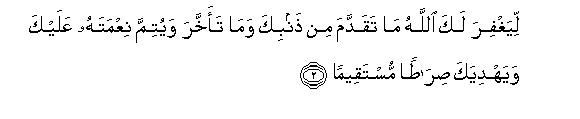
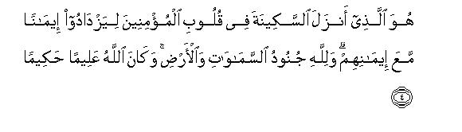
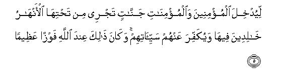
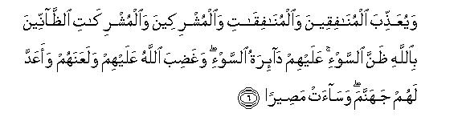
[1-7] O Prophet, We have indeed granted you a clear victory1 so that Allah may pardon you your former and latter faults,2 and may perfect His blessing upon you3 and show you the right way,4 and bestow on you a mighty help.5 He it is Who sent down tranquility into the hearts of the believers6 so that they may have another Faith added to their Faith.7 To Allah belong the hosts of the heavens and the earth, and He is All-Knowing, All Wise.8 (He has done this) so that He may admit the believing men and the believing women9 into the Gardens underneath which canals flow, there to live for ever, and may remove their evils from them.10 This is indeed the greatest success in the sight of Allah.-And that He may punish the hypocritical men and women and the mushrik men and women, who entertain evil thoughts about Allah.11 They themselves have been encircled by the evil.12 They came under the wrath of Allah and He cursed them and prepared for them Hell, which is a most evil abode. To Allah belong the hosts of the heavens and the earth, and He is All-Mighty, All-Wise.13
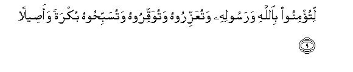
[8-9] O Prophet. We have sent you as a witness,14 as a bearer of good news and as a warner,15 so that you, O people, may believe in Allah and His Messenger, and may help him (i.e.. the Messenger) and honor him, and glorify Allah morning and evening.16
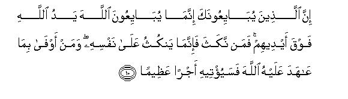
[10] O Prophet, those who were swearing allegiance to you,17 were indeed swearing allegiance to Allah. Allah's hand was over their hands.18 Now whosoever breaks this pledge breaks it at his own peril, and whosoever keeps his pledge that he has made with Allah,19 Allah will soon grant him a great reward.
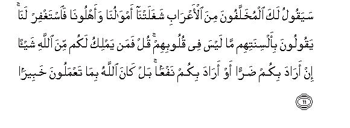
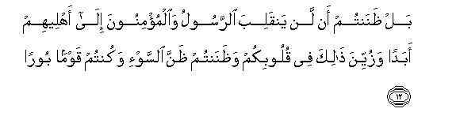
[11-12] O Prophet, the desert Arabs who were left behind?20 will surely come and say to you, "Our properties and our households kept us occupied; so ask forgiveness for us." They say with their tongues that which is not in their hearts.21 Say to them: "If it is so, who that can have any power to withhold Allah's decree in your behalf if He intends to do some harm to you or bring some good to you? Allah is well aware of all your actions.22 (But the real thing is not what you say) Nay, you rather thought that the Messenger and the believers would never return to their families and this fancy delighted your hearts23 and you harbored evil thoughts and you are a people, most wicked."24
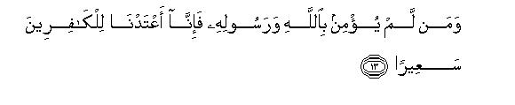
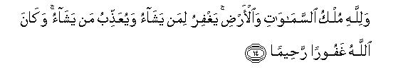
[13-14] Whoever does not believe in Allah and His Messenger, for such disbelievers We have prepared a blazing Fire.25 To Allah belongs the Kingdom of the heavens and the earth. He may pardon whomever He wills and punish whomever He wills, and He is All-Forgiving, All -Merciful.26
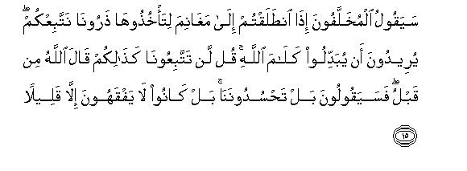
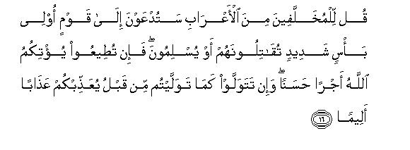
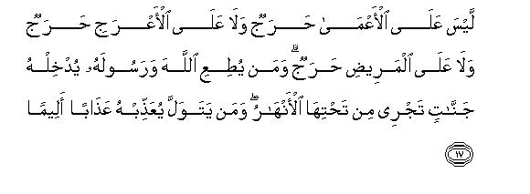
[15-17] When you set out to take the spoils, those who were left behind, will surely say to you, "Allow us too to go with you."27 They wish to change Allah's decree.28 Tell them plainly, "You shall not come with us. Allah has already said this before."29 They will say, "Nay, but you are jealous of us." (Whereas there is no question of jealousy), but they little understand the truth. Tell the desert Arabs who were left behind, "You shall soon be called upon to fight a mighty people. You shall have to fight them, or they will submit.30 Then if you carried out the Command of Jihad, Allah will give you a good reward, and if you turned your backs as you did before, Allah will punish you with a painful torment. However, there is no harm if the blind and the lame and the sick person does not come forth for Jihad.31 whosoever obeys Allah and His Messenger, Allah will admit him into Gardens underneath which canals flow; and the one who turns away, him He will punish with a painful torment.
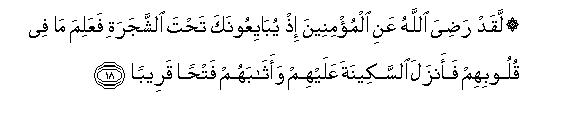
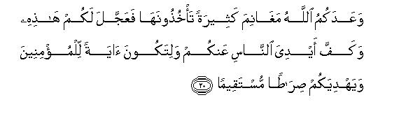
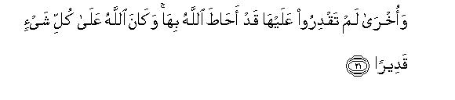
[18-21] Allah was well pleased with the believers when they were swearing allegiance to you under the tree.32 He knew what was in their hearts; therefore, He sent down tranquility upon them33 and rewarded them with a victory near at hand, and many spoils which they will (soon) take.34 Allah is All-Mighty, All-Wise. Allah promises you rich spoils which you will acquire.35 Presently He has granted you this victory.36 And has restrained the hands of the people from you37 so that it they be a sign to the believers,38 and Allah may guide you to the right way.39 Besides, He promises you other spoils as well, which you are not as yet able to take, and Allah has encompassed them.40 Allah has power over everything.
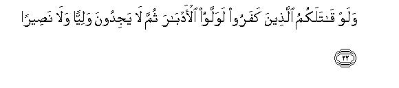
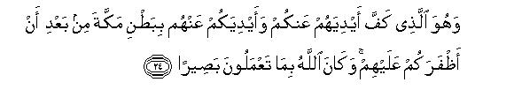
[22-24] If the disbelievers had fought you then, they would certainly have turned their backs and would have found no protector or helper.41 This is the Way of Allah that has been followed in the past,42 and you will find no change in the Way of Allah. It is He Who restrained their hands from you and your hands from them in the valley of Makkah, whereas He had granted you victory over them, and Allah saw what you were doing.
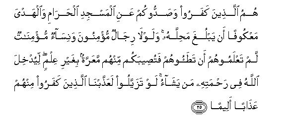
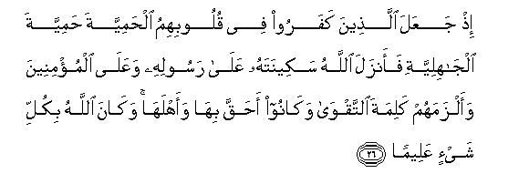
[25-26] They are the ones who disbelieved and debarred you from the Masjid al-Haram and hindered the sacrificial animals from reaching their place of sacrifice.43 men and women (in Makkah) whom you do not know and the fear that you would trample them under foot without knowing it and incur blame on that account, (the fighting would not have been allowed to stop. It was stopped), so that Allah may admit into His mercy whom He will. Had the believers stood apart (from the people of Makkah), We would have severely punished the disbelievers among them.44 (That is why) when the disbelievers set in their hearts the arrogance of paganism,45 is peace upon His Messenger and the believers,46 and obliged the believers to adhere to the word of piety, for they were most worthy and deserving of it. Allah has knowledge of everything.
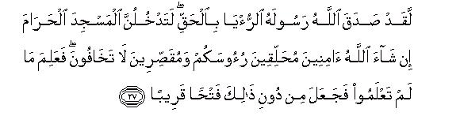
[27] Indeed, Allah had shown His Messenger a true vision, which was precisely according to the truth,47 "You shall surely enter the Masjid al-Haram, if Allah so wills,48 in full security.49 you will have your heads shaved, your hair cut,50 and you will have nothing to fear. He knew what you did not know. Therefore, He granted you this near victory before the fulfillment of the vision."
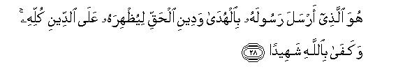
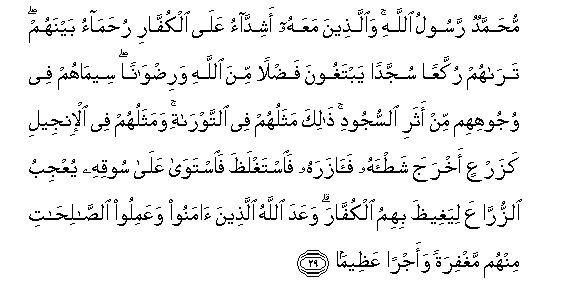
[28-29] It is Allah Who has sent His Messenger with the Guidance and the religion of Truth that He may make it prevail over all religion, and Allah is sufficient as a Witness in this regard.51 Muhammad is the Messenger of Allah, and those who are with him are hard52 on the disbelievers and merciful among themselves.53 When you see them you will find them bowing down and falling prostrate and craving for Allah's bounty and His good-will. They have the marks of prostrations on their faces by which they are distinguished54 from others. This is their description in the Torah,55 and in the Gospel they have been likened56 to a crop which put out its shoot, then strengthened it, then swelled and then stood on its own stem, filling the sowers with delight and the disbelievers with jealousy of them. Allah has promised those of them, who have believed and done good works, forgiveness and a great reward.57
1When after the treaty of Hudaibiyah this good news of the victory was announced, .the people wondered as to how the treaty could be called a victory. The Muslims did believe in this Divine Revelation as true on the basis of their Faith, but no one could understand what aspect of the victory it had. On hearing this verse, Hadrat 'Umar asked: "Is it a victory, O Messenger of Allah?" The Holy Prophet replied: "Yes." (lbn Jarir) Another Companion came before the Holy Prophet and he also put the same question; whereupon the Holy Prophet replied: "By Him in Whose hand is the life of Muhammad, this indeed is a victory." (Musnad Ahmad, Abu Da'ud) On arriving at Madinah still another person said to his companions: "What sort of a victory is it? We were debarred from the House of Allah; our sacrificial camels also could not go to their right places; the Holy Messenger of Allah had to halt at Hudaibiyah, and in consequence of this truce two of our oppressed brothers (Abu Jandal and Abu Basir) were handed over to their oppressors." When this thing reached the Holy Prophet, he said; "A vary wrong thing has been uttered: it indeed is a great victory. You reached the very home of the polytheists, and they had to persuade you to go back by soliciting you to perform 'Umrah the following year; they themselves expressed the desire to suspend hostilities and have peace with you, whereas-their malice and enmity against you is too well-known. Allah has granted you the upper hand over them. Have you forgotten the day when you were fleeing from Uhud and I was calling you back from behind? Have you forgotten the day when the enemy had descended on us from every side in the Battle of the Trench and the hearts were coming up to the throats?" (Baihaqi on the authority of 'Urwah bin Zubair) . But not long after this the truce's being a victory began to become manifest, and everyone realized that the triumph of Islam had begun with the treaty of Hudaibiyah. Almost one and the same thing has been related from Hadrat 'Abdullah bin Mas'ud, Hadrat Jabir bin `Abdullah and Hadrat Bara' bin 'Azib. They are reported to have said: "The people look upon the Conquest of Makkah as the victory, but we regard the truce of Hudaibiyah as the real victory." (Bukhari, Muslim, Musnad Ahmad, Ibn Jarir).
2If the context in which this sentence occurs is kept in view, one will certainly feel that the faults referred to here imply those shortcomings and weaknesses that had remained in the struggle that the Muslims had been making for the success and victory of Islam, under the leadership of the Holy Prophet, for the past nineteen years or so. These shortcomings are not known to any one because the intellect is absolutely helpless to find out any weakness in that struggle. But according to the highest standards of perfection in the sight of Allah there had remained some such weakness in it because of which the Muslims could not attain a decisive victory so soon over the pagans of Arabia. What Allah means to say is this: ¦If you had carried on your struggle along with those weaknesses, it would have taken you much longer to subdue Arabia, but We have overlooked all those weaknesses and shortcomings and compensated for them only through Our grace, and opened for you at Hudaibiyah the door to victory and conquest which you could not have achieved only by your ordinary endeavors"
Here, this thing also should be understood well that for the weaknesses that might occur and remain in the struggle and endeavor that a group might be making for an object, the leader and guide of the group only is addressed. This does not mean that the weaknesses are the leader's personal weaknesses. Those are, in fact, the weaknesses of the struggle that the group is making as a whole; but the address is made to the leader to tell him that his work suffers from such and such a weakness.
However, as the address is directed to the Holy Prophet and declared that Allah has forgiven him all his former and latter faults, the general words also give this meaning that Allah pardoned all the shortcomings (which were the shortcomings in view of his high position) of His Holy Messenger. That is why when the Companions saw that he took extraordinary pains over his worship, they would say: `Why do you subject yourself to such hardships when all your former and latter errors and shortcomings have been pardoned?" the Holy Prophet would reply: "Should I not behave as a grateful servant?" (Ahmad, Bukhari, Muslim, Abu Da'ud).
3"Perfection of his blessings" implies that the Muslims should become wholly free to live their lives in accordance with Islamic civilization, Islamic law and commandments, secure from every fear, every resistance and every external interference, and they should also be blessed with the power that they may uphold Allah's Word throughout the world. Dominance of disbelief and wickedness which may be a hindrance in the way of Allah's worship and an obstacle in the struggle in propagating Allah's Word, is the greatest calamity for the believers; the Qur'an calls it 'fitnah " (mischief). Delivered and freed from this calamity when they arc able to achieve an abode of Islam (darul-Islam) in which the Divine Religion is enforced in its entirety, and along with that they are also provided with the means and resources by which they may establish faith and righteousness on Allah's earth in place of disbelief and wickedness, this would be the perfection of Allah's blessing on them. As this blessing was achieved by the Muslims only through the Holy Prophet, Allah addressed only him and said: "We willed to complete Our blessing on you; therefore we have granted this victory to you."
4“The right way": the way to conquest and success. In other words, it implies that by causing the treaty to be concluded at Hudaibiyah Allah paved the way for and inspired the Holy Prophet with the plan by which he could subdue all the forces that were resisting Islam.
5Another translation can be: "Bestow on you an unprecedented victory," for the word aziz in the original may mean mighty as well as unprecedented and unparalleled. According to the first meaning, the sentence means: "By means of this treaty Allah has helped you in a way as to make your enemies helpless"; and according to the second, it means: "Seldom has this novel method ever been adopted to help somebody, that a thing which apparently is a mere peace treaty, and that too a treaty concluded from a weak position, would turn into a decisive victory."
6"Sakinat" in Arabic is calmness and tranquility and peace of mind. Here Allah calls its being sent into the hearts of the believers an important factor in the victory that Islam and the Muslims achieved at Hudaibiyah. From a study of the conditions of the tuns one comes to know what kind of a Sakinat it was that was sent down into the hearts of the Muslims during that period and how it became a source of victory. If at the time when the Holy Prophet expressed his intention to go for 'Umrah to Makkah, the Muslims had become terror-stricken and started behaving like the hypocrites as if they were going into the very jaws of death, or if at the time when they heard the news on the way that the disbelieving Quraish were coming out in great strength to fight them, they had been alarmed as to how they would face the enemy un-armed, and thus become panic-stricken, obviously no benefits would have resulted from Hudaibiyah at all. Then, if at the time when at Hudaibiyah the disbelievers had stopped the Muslims from going any further, and when they had tried to provoke them by launching against them repeated sudden attacks, and when the rumor of Hadrat 'Uthman's martyrdom had spread, and when Abu Jandal had appeared on the scene as the very image of oppression and persecution, the Muslims had actually become provoked and broken the discipline that the Holy Prophet had instilled in them, the result would have been disastrous. Above all, if at the time when the Holy Prophet was going to conclude the treaty on the conditions which were un-acceptable to the entire party of the Muslims, the Muslims had happened to disobey him, the great victory of Hudaibiyah would have turned into a humiliating defeat. Thus, it was all because of Allah's bounty that on all these critical moments the Muslims were blessed with full peace of mind with regard to the leadership and guidance of the Holy Prophet, the truth of Islam and the truthfulness of their mission. This is why they decided with a cool mind that they would face and accept whatever hardships they would encounter in the way of Allah; that is why they remained safe from fear, confusion, provocation and despair; that is why perfect discipline continues to prevail in the camp; and that is why, in spite of being deeply grieved at the conditions of peace, they submitted to the decision taken by the Holy Prophet. This was the sakinat that Allah had sent down into the hearts of the Muslims, and it was all because of this that the dangerous step of undertaking a journey for performing 'Umrah became the prelude to a unique victory.
7That is, "One Faith they already had before they set out on this expedition; they attained the additional Faith when they remained steadfast on the way of sincerity, piety and obedience in every trial that they faced in connection with the expedition. " This verse is one of those verses which show that Faith is not a static state which is incapable of growth, but it develops as well as decays and deteriorates. After embracing Islam till death the believer at every step in his life continues to be confronted with such tests and trials in which he has to take a decision whether in following the Divine Religion he is prepared to sacrifice his life, his wealth, his sentiments, desires, time, comforts and interests or not. If at the time of every such trial he adopts the way of sacrifice, his Faith progresses and develops, and if he turns away his Faith decays and deteriorates till a time may also come when the initial state of the Faith with which he had entered Islam is even endangered to be lost and destroyed. (For further explanation. see E.N. 2 of Surah AI-Anfal and E.N. 38 of AI-Ahzab).
8It means this: Allah has such hosts by which He can destroy and exterminate the disbelievers completely whenever He wills, but He has deliberately and by wisdom only placed this responsibility on the believers that they should enter a conflict with the disbelievers and struggle to make the Religion of Allah prevail and prosper in the world. In this way alone does a door to the enhancement of their ranks and successes in the Hereafter open as is being indicated in the following verse'.
9In the Qur'an generally mention of the rewards for the believers is made collectively and separate mention is not made of the rewards for the men and the women But here, since the general mention of giving the rewards could cause the doubt that this reward may perhaps be only meant for the men. Allah has made a separate mention of the believing women, saying that they too would be equal partners in this reward with the believing men. The reason is obvious. Those God-fearing women who encouraged their husbands, sons, brothers and fathers to proceed on the dangerous journey instead of stopping them from it and discouraging them by crying and wailing, who looked after their houses, their properties, their honor and children in their absence faithfully, who did not even feel the alarm lest at the sudden departure of 1,400 of the Companions the disbelievers and hypocrites of the surrounding areas would attack the city, should certainly have become equal partners with their men in the reward of Jihad although they stayed behind in their homes.
10That is, that He may pardon whatever errors they might have committed because of human weaknesses, remove every trace and mark of the errors from them before admitting them into Paradise so that they may enter Paradise absolutely free from every evil that may cause them embarrassment.
11The hypocrites living in the suburbs of Madinah were thinking, as has been stated in verse 12 below, that the Holy Prophet and his Companions would not return alive from that journey. As for the polytheists of Makkah and their pagan companions, they were thinking that they had successfully put to rout the Holy Prophet and his Companions by preventing them from performing `Umrah. In fact, whatever these two groups had thought they had this misunderstanding about Allah that He would not help His Messenger and in the conflict between the Truth and falsehood would allow falsehood to defeat and frustrate the Truth.
12That is, "They were encompassed by the same evil fate which they wanted to avoid and against which they had devised all those plans, and their same plans caused the evil fate to be hastened."
13Here the theme of verse 4 has been reiterated for another object. There, the object was to state that Allah instead of employing His supernatural hosts to fight the disbelievers had employed the believers for it only because He willed to favor them. Here, the theme has been repeated to say that in order to punish the one whom Allah wills to punish He can employ whichever of His countless hosts He likes for the purpose; no one has the power to avert His punishment by his own plans.
14Shah Waliyullah has translated shahid as "a bearer of witness to the truth", and other translators translate it as "a bearer of the witness". The word shahadat comprehends both these meanings. For explanation, sec E.N. 82 of Surah Al-Ahzab.
15For explanation, see E.N. 33 of Surah Al-Ahzab.
16According to some commentators the verse means: ".... and help the Messenger, and honor him, and glorify Allah morning and evening", and according to others: "... and help Allah, and honor Him and glorify Him morning and evening. "
Glorifying Allah morning and evening does not mean glorifying Him only in the morning and the evening but at all times. It is just like saying about something that it is well-known in the east and the west when one actually means to say that it is well-known everywhere in the world. "
17The reference is to the pledge that the Holy Prophet took from his Companions at Hudaibiyah at the rumor that Hadrat `Uthman had been killed at Makkah. According to some traditions it was a pledge unto death, and according to others it was an undertaking that they would not nut away from the battlefield. The first thing has been reported from Hadrat Salamah bin Akwa' and the second from Hadrat Ibn `Umar, Jabir bin `Abdullah and Ma'qil bin Yasar. The purport of both is the same. The Companions had pledged allegiance on the Holy Prophet's hand with the express object that if the news of Hadrat `Uthman's martyrdom proved to be true, they would settle the matter with the Quraish there and then even if they were cut to pieces in the clash. As on this occasion it was not yet certain whether Hadrat `Uthman actually had been killed or was still living, the Holy Prophet placed one of his own hands on the other and pledged allegiance on his behalf, and thus bestowed a unique honor on Hadrat `Uthman in that he made Hadrat 'Uthman a partner in the pledge by making his own sacred hand represent the hand of Hadrat `Uthman. The Holy Prophet's taking the pledge of allegiance on his behalf necessarily meant that he had full confidence that if Hadrat `Uthman had been present he would certainly have pledged the allegiance.
18That is, the hand on which the Muslims were swearing allegiance was not the hand of the Prophet's person but of Allah's representative, and this allegiance was in fact being sworn to Allah through His Messenger.
19Here, instead of `alaih-illah the words used in the original are alaihullah, which is a departure from the general rule of Arabic. `Allama Alusi has given two reasons for the unusual use of the vowel points here. First, the object on this special occasion is to express the great glory, eminence and majesty of the Being to Whom the pledge was being sworn for which alaih-u is more appropriate than `alaih-i; second, the ha in alaih-i actually represents howe; therefore, adhering here to the vowel points of the original goes well with the theme of the allegiance.
20This refers to the people living in the suburbs of Madinah whom the Holy Prophet had invited to accompany him in his march out for `Umrah, but they had not left their homes in spite of their claim to Faith just because they were afraid of death. Traditions show that these were the people of the tribes of Aslam, Muzainah, Juhainah, Ghifar, Ashja`, Dil and others.
21This has two meanings:
(1) "That after your returning to Madinah the excuse that these people will present for not going out with you, would only be a lame excuse, because they know in their hearts why they had stayed behind"; and
(2) that their imploring the Messenger of Allah for a prayer of forgiveness would only be an empty word of mouth, for in fact, they are neither feeling remorse for their failure to accompany you, nor have they any feeling that they committed a sin by not going out with the Messenger, nor are ,they seeking forgiveness sincerely.
As for themselves they think that they did a wise thing by not going on the dangerous journey; had they any desire for Allah and His forgiveness, they would not have stayed behind at home. "
22That is, "Allah's decision will be on the basis of the knowledge that He has about the reality of your actions. If your actions deserve the punishment and I pray for your forgiveness, my this prayer will not save you from Allah's punishment; and if your actions do not deserve the punishment, and I do not pray for your forgiveness, my failure to pray will not do any harm to you. Everything is in Allah's control, not mine, and no one's empty words can deceive Him. Therefore, even if I accept as true what you say and then also pray for your forgiveness on its basis, it will be vain and without result. "
23That is,"You were delighted to think that you had saved yourselves from the danger into which the Messenger and his believing supporters were going. You thought you had done so by dint of your great wisdom; and you also did not feel any compunction in rejoicing at the thought that the Messenger and the believers would not return alive from their expedition. You did not feel uneasy in spite of your claim to the Faith but were pleased to think that you did not put yourselves in the danger by accompanying the Messenger. "
24The word ba- ir (pl.bur in the original) has two meanings:
(1) A sinful, perverted and evil-minded person, who is incapable of doing anything good; and
(2) one who is doomed to an evil end, who is following the path of destruction,
25Here, Allah in clear words is declaring all such people disbelievers and devoid of the faith, who are not sincere with regard to Allah and His Religion, who shirk endangering their interests, their lives and wealth for the sake of Allah's Religion when the time comes of their trial and test. But one should remember that this is not the .sort of disbelief on the basis of which somebody in the world may be regarded as excommunicated from Islam, but this is the disbelief because of which he will be declared a disbeliever in the Hereafter. The reason is that the Holy Prophet even after the revelation of this verse did not regard as outside Islam those people in respect of whom it was sent down, nor treated them like the disbelievers.
26The mention of Allah's being All-Forgiving and All-Merciful after the foregoing warning, contains in it a subtle aspect of admonition. It means this: 'Even now if you give up your insincere attitude and way of life and adopt sincerity, you will find Allah All- Forgiving and All-Merciful. He will forgive you your previous shortcomings and will treat you according to the quality of your sincerity in the future."
27That is, `The time is approaching when these very people who were shirking accompanying you on the dangerous journey, would see you going on an expedition in which there would be the possibility of attaining easy victory and much booty. Then they would come running and request you to take them also along." Such a time came just three months after the truce of Hudaibiyah, when the Holy Prophet invaded Khaiber and took it easily. At that time everyone could see that after the truce with the Quraish not only Khaiber but the Jewish settlements of Taima, Fadak, Wadi-al-Qura' and others also of northern Arabia would not be able to withstand the might of the Muslims and would easily fall to the Islamic State. Therefore, Allah in these verses forewarned the Holy Prophet that the opportunists of the suburbs of Madinah would come up to take part in and receive their share when they would see easy victories being attained, and that he should tell them plainly: "You will never be allowed to take part in these, because only those who had gone forth to offer their lives in the conflict at Hudaibiyah regardless of every danger would be entitled o them. "
28"Allah's decree" implies the decree that only those people would be allowed to accompany the Holy Prophet in the expedition to Khaiber, who had taken part in the expedition to Hudaibiyah and sworn the pledge there for Allah has reserved the spoils of Khaiber exclusively for them; as has been stated clearly in verse 18 blow.
29The words "Allah has already said this before" caused the people the misunderstanding that this refers to some other command bearing upon the same subject that might have been sent down before this verse, and since no such command is found in this Surah before this verse, they started looking for it at other places in the Qur'an till they found verse 84 of Surah At-Taubah, in which this very subject has been dealt with for another occasion. But that verse, in fact, does not apply to this, for it was sent down in connection with the Battle of Tabuk, and its period of revelation is three years after the period of revelation of Surah AI-Fat-h. The fact of the matter is that this verse refers to vv. 18-19 of this Surah itself, and Allah's already having said this does not mean its having been said before this verse but its having boon said to the laggards before this conversation. This conversation with the laggards about which advance instructions are being given to the Holy Prophet was to take place at the time of the expedition to Khaiber, and this whole Surah, including vv. 18-19, had been sent down three months earlier on return from Hudaibiyah on the way. A careful study of the context shows that Allah here is giving this instruction to His Messenger: "When after your return at Madinah the laggards come to you with their excuses, you should give them this reply, and when they express their desire to accompany you in the expedition to Khaiber, you should tell them this. "
30The words au yuslimun in the original can have two meanings and both are implied:
(1) 'That they should accept Islam"; and
(2) 'that they should submit to the Islamic rule."
31That is, the one who has a genuine excuse for not joining Jihad is not accountable, but if the able-bodied, strong people make excuses for not joining it, they cannot be regarded as sincere with regard to Allah and His Religion, and they cannot be given the opportunity to take advantage of the gains as members of the Muslim community, but when time comes for making sacrifices for Islam, they should lag behind and seek the safety of their lives and properties."
Here, one should know that two kinds of the people have been exempted from Jihad duty by the Shari ah:
(1) Those who are not physically fit for Jihad. e.g. young boys, women, the insane, the blind and such patients as cannot perform military duties, and such disabled people as cannot take part in war; and
(2) those for whom it may be difficult to join Jihad for other sound reasons, e.g. the slaves, or those persons who may be ready for Jihad but may not afford weapons of war and other necessary equipment, or such debtors who may have to pay their debts at the earliest opportunity and the creditors may not be willing to allow them more time, or such people whose parents (or a parent) might be alive, who stand in need of the children's help.
In this regard, it should also be known that the children should not join Jihad without the permission of their parents if they are Muslims, but if they are non-Muslims it is not permissible for a person to stay away from Jihad in case they refuse permission. "
32Here again the pledge taken from the Companions at Hudaibiyah has been mentioned. This is called Bai 'at Ridwan. for Allah in this verse has given the good news that he became well pleased with those who on this dangerous occasion did not show the least hesitation in offering their lives for the cause of Islam and gave an express proof of their being true in their faith by taking the pledge on the hand of the Holy Prophet. The Muslims at this time were equipped only with a sword each. numbered only 1,400, were unprepared for warfare, but were donning the pilgrim garments, were 25 miles away from their military headquarters (Madinah), while the enemy's stronghold (Makkah) where from it could get any kind of help was just 13 miles off. Had these people been lacking in their sincerity of Allah and His Messenger and His Religion in any degree, they would have abandoned the Messenger on this extremely dangerous occasion, and Islam would have been vanquished for ever. Apart from their own sincerity there was no external pressure under which they might have been compelled to take the pledge. Their becoming ready at that time to fight in the cause of Allah's Religion regardless of the dangers, is a clear proof that they were true and sincere in their Faith and loyal to th ò cause of Allah and His Messenger in the highest degree. That is why Allah honored them with this certificate of His good pleasure. Now it some one becomes angry with them after they have been honored with this certificate of Allah's good pleasure, or slanders and vilifies them, his enmity is with Allah, not with them. Those who say that at that time when Allah honored them with this certificate of His good pleasure, they were sincere, but afterwards they became disloyal to Allah and His Messenger, perhaps harbor a mistrust about Allah that while sending down this verse He was unaware of their future; therefore, He awarded them this warrant only in view of their state at that time, and probably due to the same unawareness inscribed this verse in His Holy Book as well so that afterwards also, when those people have turned disloyal, the world should continue reading this verse about them and praising the knowledge of the unseen of that Allah Who, God forbid, had granted these faithless and disloyal people the warrant of His good pleasure.
About the Tree under which this pledge was taken Ibn `Umar's slave Hadrat Nafi's tradition has generally spread saying that the people had started visiting it and offering Prayers by it, so that when Hadrat 'Umar came to know of it, he rebuked and warned the people and ordered it to be cut down . ( Tabaqat Ibn Sa'd, vol. II, p. l00). But there are several other traditions which contradict it. A tradition from Hadrat Nafi' himself has been reported in Tabaqat of Ibn S`ad to the effect that many years after the Bai at Ridwan the Companions looked for the Tree but they could not recognize it and differed as to which tree it was. (p. 106). The second tradition has been reported in Bukhari, Muslim, and Tabaqat on the authority of Hadrat Said bin al-Musayyab. He says that his father was one of those who had participated in the Bai `at Ridwan. He told him that when they had gone for 'Umrah al-Qada the following year, they had forgotten the Tree, and they could not locate it even after looking for it. The third tradition is from lbn Jarir. He says that when Hadrat `Umar during his caliphate passed by Hudaibiyah, he inquired about the Tree under which the pledge had been sworn. Someone pointed to one tree and another one to another tree. At this Hadrat `Umar told the people to forget it as there was no real need to bother about it.
33Here, sakinat means that state of the heart on whose strength a man throws himself into dangers with complete calm and peace of mind for the sake of a great objective and resolves without fear and consternation to undertake it regardless of the consequences.
34The reference is to the conquest of Khaiber and its rich spoils and this verse expressly points out that Allah had reserved this reward only for those
People who had taken part in the Bai at Ridwan; apart from them no one else was entitled to take part in the victory and have a share in the spoils. That is why when the, Holy Prophet marched out to attack Khaiber in Safar, A.H. 7, he took only those people with him. No doubt afterwards he gave some of the spoils of Khaiber to those emigrants also who returned from Habash and to some Companions from the Dus and Ash'ar tribes as well, but this was given either from Khums (one fifth of the spoils of war given into the public treasury), or with the approval of the Companions who had taken the pledge of Ridwan; no one else was given any share of it.
35This refers to the other victories that the Muslim achieved successively after Khaiber.
36This implies the treaty of Hudaibiyah which has been described as "a manifest victory" in the beginning of the Surah.
37That is, "He restrained the disbelieving Quraish from attacking you at Hudaibiyah although from all appearances they were in a much better position and yours was a much weaker side militarily." Furthermore, it also implies that no enemy power could muster courage to attack Madinah in those days, whereas after the departure of 1,400 soldiers the Madinah front had become very weak, and the Jews, the polytheists and hypocrites could take advantage of the situation.
38Sign of this as to how Allah helps the one who remains steadfast on obedience to Allah and His Messenger and comes out to support and defend the Truth and righteousness with his trust and faith in Allah.
39"To the right way" : "To the way of greater insight and faith so that you may remain steadfast on obedience to Allah and His Messenger in the future and may go on marching on the way of truth with trust in Allah, and may learn this lesson from these experiences that the believer should take practical steps to do whatever is demanded by Allahs Religion with his trust in Him, and should not overestimate either his own strength or the strength of the unbelievers."
40Most probably this is a reference to the Conquest of Makkah. The same is the opinion of Qatadah and Ibn Jarir. It seems to mean this: "Though Makkah has not yet fallen to you, Allah has encircled it, and as a result of this victory at Hudaibiyah, it will also fall to you. "
41That is, "Allah did not prevent fighting at Hudaibiyah because there was a possibility of your being defeated there, but there were other reasons for it, which are being stated in the following verses. Had that factor not been there and Allah had allowed the war to take place, the disbelievers would surely have been routed and Makkah would have fallen to you at that very time. "
42Here, "the Way of Allah" means: Allah disgraces the disbelievers who fight His Messenger and helps His own Messenger.
43That is, "Allah was seeing the sincerity and the selfless devotion with which you had become ready to lay down your lives in the cause of the true Faith and were obeying the Prophet without any question. Allah was also seeing that the disbelievers were being unfair and high-handed. The demand of this situation was that they should have been punished there and then through you, but in spite of that. Allah restrained your hands from them and their hands from you."
44This was the reason why Allah did not allow fighting to take place at Hudaibiyah. This has two aspects:
That at that time there were quite a number of the Muslim men and women living in Makkah, who were either hiding their faith, or were being persecuted because of their faith as they had no means to emigrate. Had there been fighting and the Muslims had pushed back the disbelievers and entered Makkah, these Muslims also would have been killed in ignorance along with the disbelievers. This would not only have grieved the Muslims but the Arab polytheists also would have got an opportunity to say that the Muslims did not even spare their own brethren in faith during wartime. Therefore, Allah took pity on the helpless Muslims and averted the war in order to save the Companions from grief and infamy. The other aspect of the expedience was that Allah did not will that Makkah should fall to the Muslims as a result of the defeat of the Quraish after a bloody clash but He willed that they should be encircled from all sides so that within two years or so they should become absolutely helpless and subdued without offering any resistance, and then the whole tribe should accept Islam and enter Allah's mercy as it actually happened on the Conquest of Makkah.
Here the juristic dispute has arisen that if during a war between the Muslims and the disbelievers, the disbelievers should bring out some Muslim men and women, children and old men, in their possession and put them in the forefront as a shield for themselves, or if there is some Muslim population also in the non-Muslim city under attack by the Muslim forces, or if in a warship of the disbelievers, which is within our gun-fire, the disbelievers have taken some Muslims also on board, can the Muslim army open fire on it? In answer to it the nulings given by different jurists are as follows:
Imam Malik says that in such a case fire should not be opened, and for this he cites this very verse as an argument. He contends that Allah prevented the war at Hudaibiyah only in order to save the Muslims. (Ibn al-`Arabi, Ahkam al Qur'an). But this in fact is a weak argument. There is no word in the verse which may support the view that launching an attack on the enemy in this case is unlawful and forbidden. At the most what one can say on the basis of this verse is that the launching of an attack in such a case should be avoided in order to save the Muslims, provided that it does not put the disbelievers in an advantageous position against the Muslims militarily, or does not diminish the Muslims' chances of gaining an upper hand in the conflict.
Imam Abu Hanifah, Imam Abu Yusuf, Imam Zufar and Imam Muhammad saythat it is lawful to open fire in such a case; so much so that even if the disbelievers use the children of the Muslims as a shield by putting them in the forefront, there is no harm in shooting at them, and it is not obligatory for the Muslims to expiate and pay any blood-money for the Muslims thus killed, (AIJassas, Ahkam al-Qur'an; Imam Muhammad, :Kitab as-Siyar).
Imam Sufyan Thauri also in this case regards opening of the fire as lawful, but he says that although the Muslims will not pay the blood-money of the Muslims thus killed, it is obligatory for them to expiate the sin. (AI-Jassas, Ahkam al-Qur an).
Imam Auza`i and Laith bin Sa`d say that if the disbelievers use the Muslims as a shield, fire should not be opened on them. Likewise, if it is known that in their warship ow own prisoners also are on board, it should not be sunk. But if we attack a city of theirs and we know that there are Muslims also in the city, it is lawful to open fire on the city, for it is not certain that our shells will only hit the Muslims, and if a Muslim becomes a victim of this shelling, it will not be willful murder of a Muslim but an inadvertent accident. (Al-Jassas, Ahkam alQur an).
Imam Shafe`i holds the view that in such a case if it is not inevitable to open fire it is better to try to save the Muslims from destruction; although it is not unlawful to open fire in this case, it is undesirable. But if it is really necessary and it is feared that in case fire is not opened it will put the disbelievers in a better position militarily against the Muslims, it is lawful to resort to shelling, but even then every effort should be made to save the Muslims as far as possible. Furthermore, Imam Shafe'i also says that if during a conflict the disbelievers put a Muslim in front as a shield and a Muslim kills him, there can be two possible alternatives: either the killer knew that the murdered person was a Muslim, or he did not know that he was a Muslim. In the first case, he will be under obligation to pay compensation for manslaughter as well as do expiation; in the second case he will only do expiation. (Mughni al-Muhtaj).
45The words hamiyyat al -jahiliyyah mean that a man should willfully do something unworthy and improper only for the sake of his honor and prestige. The disbelievers of Makkah themselves acknowledged and admitted that everybody ,had a right to visit the Ka`bah for performing Hajj and `Umrah, and that they had no right to slop anyone from this duty. This was an ancient admitted law of Arabia. But in spite of knowing that they were absolutely in the wrong and the Muslims in the right, they prevented the Muslims from performing `Umrah only for the sake of their prestige. The righteous even among the polytheists also were saving that preventing the people who had come in the pilgrim garbs along with sacrificial camels from performing pilgrimage was an improper act. Yet the Quraish leaders persisted in their resistance only under the idea that if Muhammad (upon whom be Allah's peace) entered Makkah along with a large number of his followers, it would mean loss of prestige for them among the Arabs. This was their arrogance.
46Here, sakinat means the patience and dignity with which the Holy Prophet and the Muslims resisted the disbelievers rancor and spirit of paganism. They did not get provoked at their stubborn and insolent behavior and did not do anything which might have violated the spirit of Truth and righteousness, or which might have further complicated the situation instead of settling it amicably.
47This is the answer to the question that was constantly agitating the minds of the Muslim. They said, "The Holy Prophet had seen in his vision that he had entered the Masjid al-Haram and moved round the Ka`bah in worship. Then how is it that they were returning without performing `Umrah?" In answer to this, although the Holy Prophet had told them that in his vision he had not seen that they would perform the `Umrah that very year, still there remained some suspicion in the hearts. Therefore, Allah Himself explained that it was He Who had shown the vision and it was a true vision and it would certainly be fulfilled.
48Here, about the words insha'-Allah (if Allah so wills), which Allah Himself has used with His promise, one can raise the objection that when Allah Himself is making this promise, what is the meaning of making it conditional upon His own willing it? The answer is: Here the words insha'-Allah have not been used in the sense that if Allah does not will, He will not fulfill His promise, but in fact these relate to the background in which this promise was made. The presumption on the basis of which the disbelievers of Makkah had played the drama of preventing the Muslims from `Umrah was that only he whom they would allow would perform `Umrah, and would perform it only when they would allow it At this Allah has said: "This depends on Our, not on their, will. The reason why 'Umrah has not been performed this year is not because the disbelievers of Makkah did not allow it to be performed, but because We did not will it to be performed; in the future 'Umrah will be performed if We will, no matter whether the disbelievers allow it or disallow it." Besides, these words also contain the meaning that the Muslims too, will perform `Umrah not by their own power but because We would will that they should perform it; otherwise if We do not will, they do not possess any power to perform it by themselves."
49This promise was fulfilled in the following year in Dhil-Qa'dah A. H. 7. This `Umrah is well known in history as 'Umrah al-Qada `.
50The words clearly point out that it is not obligatory to get the head shaved in `Umrah and Hajj, but it is also right to get the hair cut short. However, it is better to have the head shaved, for Allah has mentioned it first and then mentioned having the hair cut short.
51The reason why this thing has been mentioned here is that when at Hudaibiyah the peace treaty was going to be written down, the disbelievers had objected to the use of the words Rasul-Allah (Messenger of Allah) with the name of the Holy Prophet, and on their insistence the Holy Prophet himself had wiped off these words from the document. At this Allah says: "Our Messenger's being a Messenger is a reality which remains unaffected whether someone believes in it or not. If some people do not believe in it, they may not, for "Allah is enough for a witness" over it. Their denial will not change the reality, but the Guidance and the true Faith which this Messenger has brought from Us, shall prevail over all religion, no matter how hard the deniers try to obstruct its progress."
"All religion" implies all those ways of life which include the nature of din (religion). We have explained it fully in E.N. 3 of Surah Az-Zumar and E.N. 20 of Surah Ash-Shura above. Here what Allah has stated in clear words is: The purpose of the Holy Prophet's appointment as a Prophet was not merely to preach this Religion but to make it prevail over all others. In other words, he did not bring this Religion so that it might survive in a limited compartment of life which is allowed it by the dominant religion, while the rest of the spheres of life, by and large, should remain under the relentless control of some false religion. But he had brought it so that it should be the dominant Religion of life and any other religion should survive, if at all it survives, only within the limits in which it allows it to survive. (For further explanation, sec E.N. 48 of Surah Az-Zumar).
52"The Companions (of the Holy Prophet) are hard on the disbelievers" : they are not "wax that the disbelievers may mold them as they like; they can neither be cowed nor. purchased by any inducement. The disbelievers have no power to turn them away from the great objective for the sake of which they have joined and followed the Holy Prophet even at the cost of their lives."
53That is, "Whatever their hardness and severity, it is only for the disbelievers, not for the believers. As regards the believers they are soft, merciful, affectionate, sympathetic and compassionate. Their unity of aim and object has produced in them love and harmony and complete accord among themselves."
54This does not imply the mark that appears on the forehead of some people on account of prostrations, but it implies the marks and traces of the fear of God, munificence, nobility and goodness of manner that naturally appears on the face of a person on account of bowing down before God. Man's face is an open book on the pages of which different states of a man's self can be seen easily. A vain and arrogant person's face is different from the face of a humble, modest and unassuming person; an immoral person's face is clearly distinguished from the face of a righteous and well-mannered person; and there is a marked difference between the facial appearance of a wicked man and of a noble and virtuous man. What Allah means to say is: "The Companions of Muhammad (upon whom be Allah's peace) are such that one can recognize them on first sight to be the best of mankind, because their faces shine forth with the light of God-worship and God -consciousness." This is the same thing about which Imam Malik has said that when the armies of the Companions entered Syria, the Syrian Christians remarked: "These people possess the very same qualities and characteristics of the disciples of the Prophet Jesus Christ."
55The allusion probably is to Deuteronomy, 33: 2-3, in which the Holy Prophet's advent has been foretold and the word "saints" has been used for his Companions. Apart from this, if some other quality of the Companions has been mentioned in the Torah, it is not found in the existing, corrupted Torah.
56This parable is found in a sermon of the Prophet Jesus that has been reported in the New Testament, thus:
"And he said, So is the kingdom of God, as if a man should east seed into the ground: And should sleep, and rise night and day, and the seed should spring and grow up, he knoweth not how. For the earth bringeth forth fruit of herself; first the blade, then the ear, after that the full corn in the ear. But when the fruit is brought forth, immediately he putteth in the sickle, because the harvest is come. And he said, Where unto shall we liken the kingdom of God? or with what comparison shall we compare it? It is like a grain of mustard seed, which, when it is sewn in the earth, is less than all the seeds that be in the earth: Hut when it is sown, it groweth up, and becometh greater than all herbs, and shouted out great branches; so that the fowls of the air may lodge under the shadow of it."
The last portion of this sermon is also found in Matthew, 13: 31-32.
57A section of the Muslims translates this verse, thus: "Allah has promised forgiveness and a great reward to those from among these people who have believed and done good works." Thus, they invent a way to vilify and slander the Companions, and claim that according to this verse many people among the Companions were not believers and righteous. But this commentary goes against vv. 4, 5, 18 and 26 of this very Sarah, and does not even accord with the initial sentences of this verse itself. In vv. 4-5, Allah has made mention of sending down sakinat (tranquillity) and of effecting increase in the Faith of all those Companions who were present with the Holy Prophet at Hudaibiyah, and given them without any exception the good news of admission into Paradise. In verse 18, Allah has expressed His good pleasure for all those who took the pledge to the Holy Prophet, and in this also there is no exception. In verse 26 also Allah has used the word mu 'minin (believers) for all the Companions, has made mention of sending down His sakinat to there, and obliged them to be righteous and pious, for they were most worthy and deserving of all mankind. Here also it was not said that the news was being given only abut those who were believers among them. Then in the initial sentences also of this verse itself the characteristics mentioned arc of all those people who were with the Holy Prophet Muhammad (upon whom be Allah's peace and blessings). The words are to the effect that all the people who are with him have this and this quality and characteristic. After this, suddenly in the last sentence there could be no excuse to say that some of them were the believers and others were not.